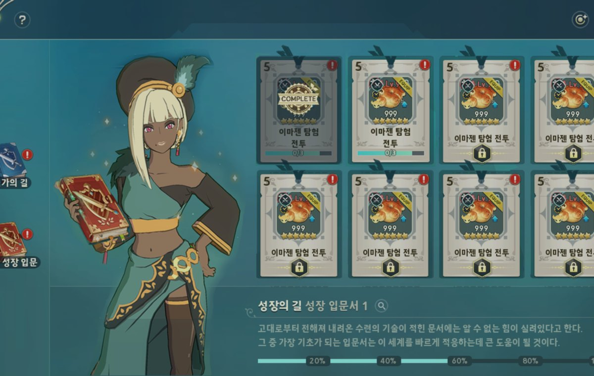
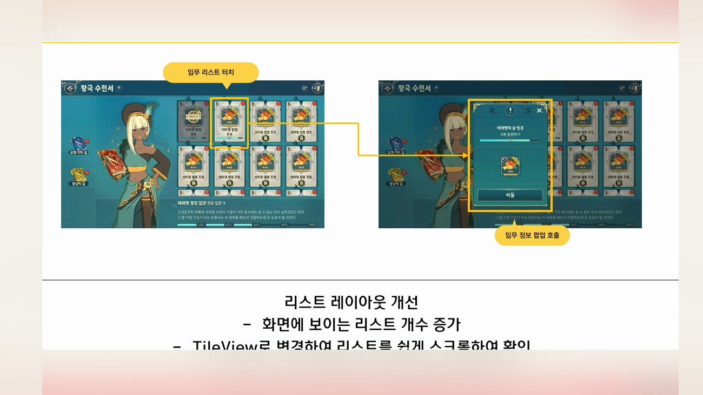
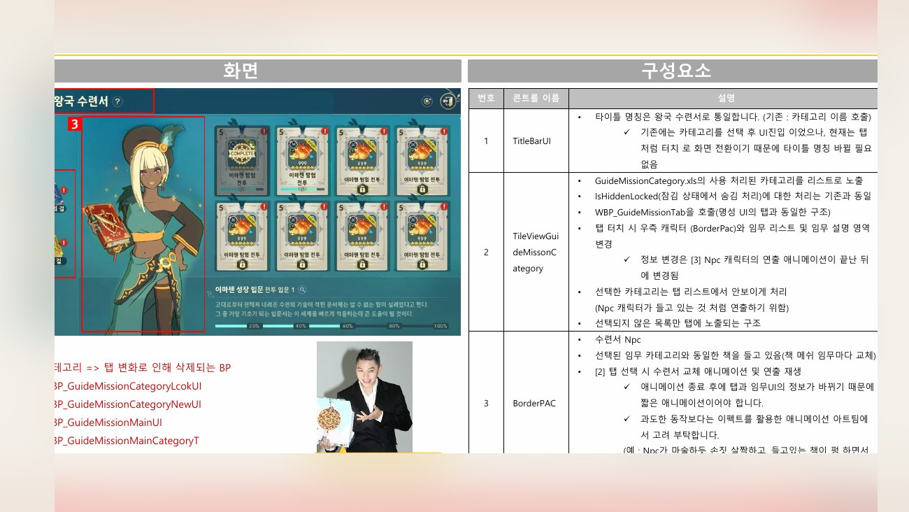
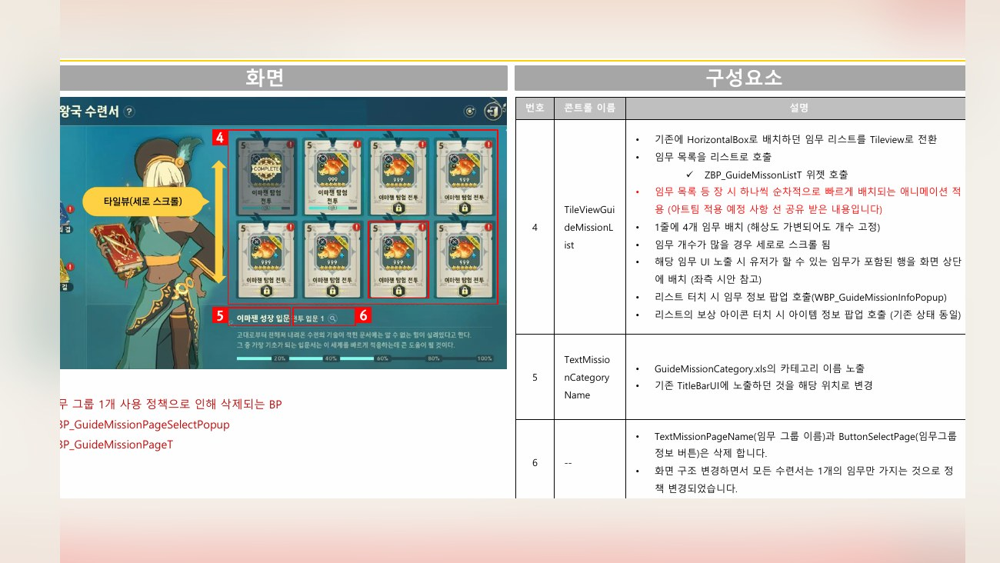
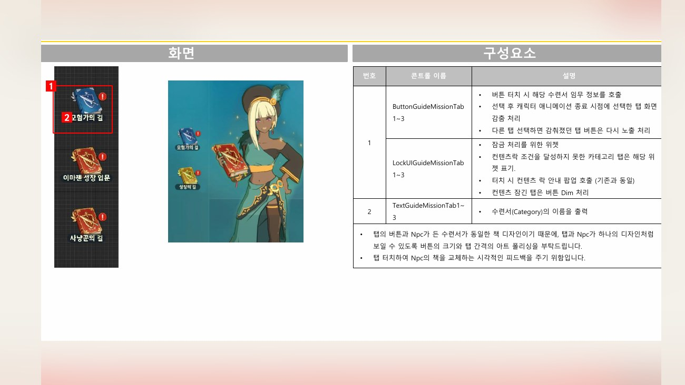
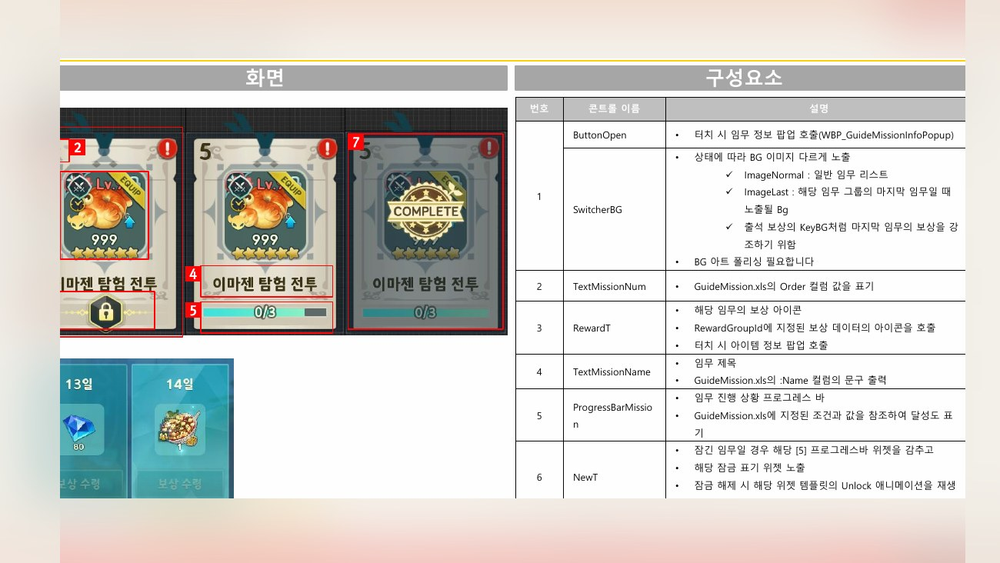

Planning Context
어떤 기획이었나
- 수련서는 성장 과제, 진행 상태, 상세 조건, 보상 확인이 함께 필요한 시스템이라 단순 메뉴 진입만으로는 UX를 설명하기 어렵습니다.
- 임무 목록과 세부 화면의 정보량이 많아 우선순위와 스크롤/상세 진입 흐름을 정리해야 했습니다.
ProjectN · Training Book
수련서의 임무 목록, 세부 화면, 보상 확인, 스크롤과 진입 구조를 시스템 단위로 정리한 UX 개선 사례입니다.

Planning Context
Process
Deliverables
Result
수련서 시스템의 목록/상세/보상 흐름을 정리해 성장 과제 확인과 진행 상태 인지가 쉬운 UX로 다듬었습니다.
Deliverable Captures
원본 문서는 포함하지 않고, 포트폴리오 확인용으로 일부 페이지만 이미지화했습니다. 슬라이드 마스터/상하단 영역은 흐림 처리했습니다.




